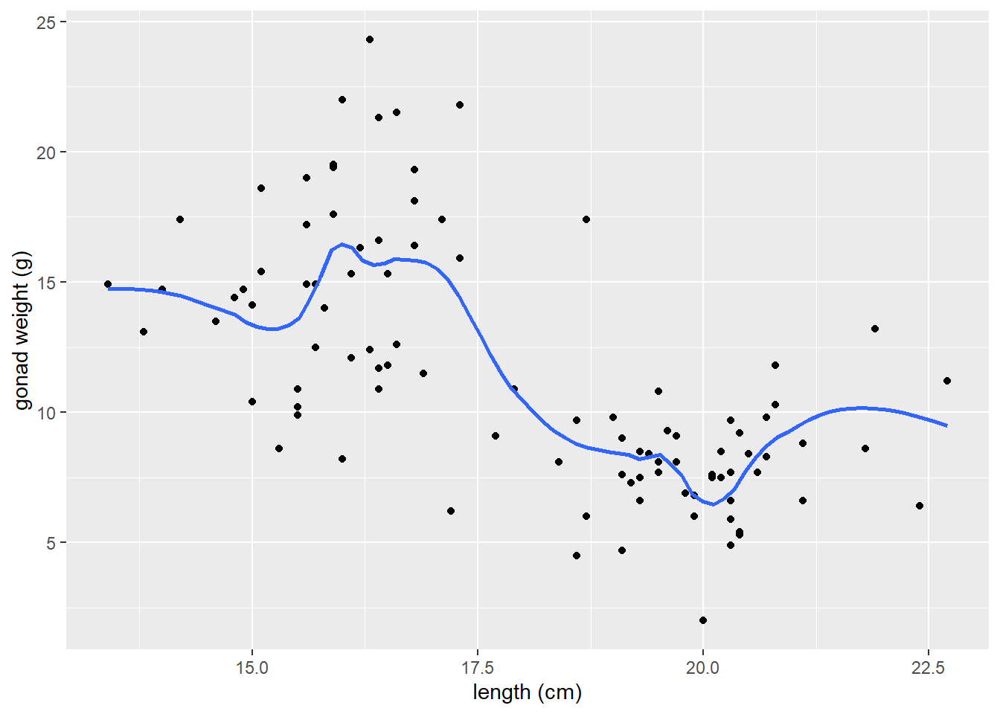

# load tidymodels package (to use functions in broom package)
library(tidymodels)
# load skimr package - to use skim() function
# for descriptive statistics
library(skimr)
#load cowplot package
# used to combine multiple ggplots into a single figure
library(cowplot)
# load tidyverse
library(tidyverse)Example Code - Correlation and Regression w/ inference and assumptions checking
Load Packages
The tidyverse package is actually a collection of multiple R packages https://www.tidyverse.org/packages/ including the ggplot2 package (for plotting) and dplyr package (for organizing and summarizing data). And you can load these (and others packages in the tidyverse) all at once using library(tidyverse).
The ggplot2 Package we will use primarily for making plots (and is part of the tidyverse) has great help pages: https://ggplot2.tidyverse.org/reference/index.html
The dplyr Package we will use for “data wrangling” (e.g., organizing, summarizing) and it also has (not as extensive) help pages https://dplyr.tidyverse.org/ (plus cheat sheets RStudio > Help > Cheatsheets)
The broom Package is loaded/installed as part of tidymodels meta-package (similar to tidyverse). More information/examples of broom package functions can be found here: https://broom.tidymodels.org/articles/broom.html
The cowplot Package will be used here to combined multiple ggplots into a single figure. But it also contains functions for all sorts other plotting purposes (some cool/useful, others I would not necessarily advise using):
General modeling strategy:
Read-in the data file
- Use the
read_csv()function to read the .csv data table file into RStudio
# Read-in .csv file with YT simulated data
# name the R object dat_yt
dat_yt <- read_csv("YellowTangData_29_SEP_2016.csv")View (some of) the data
- use glimpse
()function to examine the structure of the data.frame named dat_yt
glimpse(dat_yt)Rows: 100
Columns: 8
$ sex <chr> "M", "F", "F", "F", "F", "M", "F", "F", "M", "M", "M", "…
$ length_cm <dbl> 20.3, 16.0, 17.2, 17.1, 15.9, 20.5, 17.7, 15.1, 21.1, 19…
$ gonad_wt_g <dbl> 6.6, 22.0, 6.2, 17.4, 17.6, NA, 9.1, 15.4, 8.8, 7.6, 9.0…
$ home_range_m2 <dbl> 3.6, 24.5, 3.4, 19.8, 15.7, 5.1, 7.8, 2.1, 3.5, 1.7, 2.2…
$ gut_wt_g <dbl> 2.6, 0.6, 2.1, 0.7, 0.4, 0.7, 1.6, 2.7, 0.4, 2.2, 0.8, 0…
$ parasites <dbl> 8, 8, 7, 8, 8, 8, 8, 6, 8, 7, 6, 7, 6, 7, 6, 7, 7, 8, 7,…
$ location <dbl> 3, 1, 2, 4, 2, 2, 3, 1, 4, 1, 1, 2, 3, 4, 1, 3, 4, 2, 3,…
$ fishing_level <chr> "low", "high", "medium", "prohibited", "medium", "medium…The data type of each variable: https://tibble.tidyverse.org/articles/types.html (typically you’ll see: chr - character, dbl - double (number), or fct - factor (categorical variable)
Scatter plots
See the tidyverse help page for geom_point() to see how to customize scatter plots:
https://ggplot2.tidyverse.org/reference/geom_point.html
There’s also additional options (like how to specify a certain point shape) here:
https://ggplot2.tidyverse.org/articles/ggplot2-specs.html
A scatter plot of yellow tang length cm and gonad weight:
ggplot(dat_yt, aes(x = length_cm, y = gonad_wt_g)) +
geom_point() +
xlab("length (cm)") +
ylab("gonad weight (g)")This appears to be a relatively weak, negative relationship.
Customizing Scatter plots
See the tidyverse help page for geom_point() to see how to customize scatter plots:
<https://ggplot2.tidyverse.org/reference/geom_point.html>
There’s also additional options (like how to specify a certain point shape) here:
https://ggplot2.tidyverse.org/articles/ggplot2-specs.html
If you want to change characteristics (size, color, shape) of ALL POINTS:
- Put those arguments in
geom_point(), NOT inaes():
ggplot(dat_yt, aes(x = length_cm, y = gonad_wt_g)) +
geom_point(color = "dark green", size = 3, shape = 1) +
xlab("length (cm)") +
ylab("gonad weight (g)")
Now map the sex variable to color in the aes() in the scatter plot of yellow tang length cm and gonad weight:
ggplot(dat_yt, aes(x = length_cm, y = gonad_wt_g, color = sex)) +
geom_point() +
xlab("length (cm)") +
ylab("gonad weight (g)")
geom_smooth()LOWESS moving average curves
https://ggplot2.tidyverse.org/reference/geom_smooth.html
geom_smooth()by default adds a moving average smoother line, also referred to as a LOWESS smoother curve (Locally Weighted Scatterplot Smoothing)we add the argument
se = FALSEso that error bars do not plot on the line, which is not necessary here.
# a smoother line (moving average) for all data
ggplot(dat_yt, aes(x = length_cm, y = gonad_wt_g)) +
geom_point() +
geom_smooth(se = FALSE) +
xlab("length (cm)") +
ylab("gonad weight (g)")
the
spanargument changes the range of x values over which the the moving average is done.Typically use trial and error, try values between 0.3 and 1.0 for span.
# span = 0.3
ggplot(dat_yt, aes(x = length_cm, y = gonad_wt_g)) +
geom_point() +
geom_smooth(span = 0.3, se = FALSE) +
xlab("length (cm)") +
ylab("gonad weight (g)")
# span = 1
ggplot(dat_yt, aes(x = length_cm, y = gonad_wt_g)) +
geom_point() +
geom_smooth(span = 1, se = FALSE) +
xlab("length (cm)") +
ylab("gonad weight (g)")
- if we add
color = sexto aes, it will do a smoother line (moving average) for each sex
# add color = sex to aes
ggplot(dat_yt, aes(x = length_cm, y = gonad_wt_g, color = sex)) +
geom_point() +
geom_smooth(se = FALSE) +
xlab("length (cm)") +
ylab("gonad weight (g)")
ggplot(dat_yt, aes(length_cm, gonad_wt_g, color = fishing_level)) +
geom_point() +
geom_smooth(se = FALSE)
Can see differences in the relationship between the sexes. However fishing_level does not appear to impact the relationship at all (all fishing levels have very similar smoother lines).
Correlation Coefficient
NOTE: you should do EITHER a correlation analysis or a linear model (regression) analyses. They are similar but have different purposes, so you choose to do one or the other depending on your purpose. (DO NOT DO BOTH for your assignment or your own analyses).
cor() within summarize()
You can also make cor() work with the pipe operator and the
summarize()function, similar to calculating a mean, median etc.Note: the cor() function has arguments for the x and y variables in the correlation
and if there are NAs in either variable you need to add the argument
use = "pairwise.complete.obs"so the result is not an NA
# A tibble: 1 × 1
r
<dbl>
1 -0.634# uncomment to see help file for the cor function
# ?corHere -0.63 indicates a moderately strong (strength) negative (direction) relationship between for the entire sample of Yellow Tang length and gonad weight as can be seen in the previous scatter plot.
corrr tidyverse package (extra - only if need to do a lot of correlations)
https://www.tidyverse.org/blog/2020/12/corrr-0-4-3/
corrr is a package for exploring correlations in R, focused on creating and working with data frames of correlations that can be easily explored via corrr functions or by leveraging other functions in the tidyverse. It’s main value is if you want to run a lot of correlations between many different variables in a data.frame, so we won’t use it much/at all in our course. JUST HERE FOR DEMO, don’t need to install/use…
- (install if necessary, and) load the corrr package with the
library()function
-
correlate()is the function from the corrr package to produce correlation coefficients.
# A tibble: 2 × 3
term length_cm gonad_wt_g
<chr> <dbl> <dbl>
1 length_cm NA -0.634
2 gonad_wt_g -0.634 NA The output is similar to the one produced by the cor() function above if you just want to see the correlation coefficient for a pair of numerical variables.
However, the
correlate()output is a data.frame (i.e., a tidyverse “tibble”) instead of being a matrix, so there are some advantages. But the real benefits come if you want to run correlations between many pairs of variables and/or visualize those.See the tidyverse help page for the corrr package if you want to see more examples of what it can do: https://www.tidyverse.org/blog/2020/12/corrr-0-4-3/
- Here we select all numerical columns, and then calculate correlation between all pair-wise combinations of variables.
# A tibble: 6 × 7
term length_cm gonad_wt_g home_range_m2 gut_wt_g parasites location
<chr> <dbl> <dbl> <dbl> <dbl> <dbl> <dbl>
1 length_cm NA -0.634 0.0452 -0.0998 -0.0944 0.0426
2 gonad_wt_g -0.634 NA -0.0356 0.119 0.0479 0.0565
3 home_range_m2 0.0452 -0.0356 NA -0.0558 -0.294 -0.0689
4 gut_wt_g -0.0998 0.119 -0.0558 NA 0.0268 -0.137
5 parasites -0.0944 0.0479 -0.294 0.0268 NA 0.0310
6 location 0.0426 0.0565 -0.0689 -0.137 0.0310 NA Guess the correlation coefficient:
https://psu-eberly.shinyapps.io/Correlation_Guessing/
It is good to be able to relatively precisely (maybe within 0.3) guess a correlation coefficient from looking at a plot of data.
(This Shiny App is something else built with R)
Correlation Coefficient r for each level of a variable w/ group_by()
- Calculate the correlation coefficient each sex using the group_by function:
# A tibble: 2 × 2
sex r
<chr> <dbl>
1 F 0.104
2 M 0.192When we ran the correlation with all data (all fish in the sample) it was -0.63, but now for each sex individually it switches to very week positive relationships (0.19 for males and 0.10 for females).
Correlation Significance Tests
Read in the data
# | label: Read in data
# must install "MASS" package, if not installed already
# use cats data object in MASS package
library("MASS")
# uncomment to see help file for cats data set
#?cats
# assign built in data set to a new object
# name so it can be modified as needed
dat_cats<-cats
glimpse(dat_cats)Rows: 144
Columns: 3
$ Sex <fct> F, F, F, F, F, F, F, F, F, F, F, F, F, F, F, F, F, F, F, F, F, F, …
$ Bwt <dbl> 2.0, 2.0, 2.0, 2.1, 2.1, 2.1, 2.1, 2.1, 2.1, 2.1, 2.1, 2.1, 2.2, 2…
$ Hwt <dbl> 7.0, 7.4, 9.5, 7.2, 7.3, 7.6, 8.1, 8.2, 8.3, 8.5, 8.7, 9.8, 7.1, 8…Scatter plot of data (to assess correlation assumptions)
ggplot(dat_cats, aes(y=Hwt, x=Bwt)) +
geom_point(size = 2, shape=1) + # Use hollow circles
theme_classic() +
xlab("Body Weight (kg)") +
ylab("Heart Weight (g)")Assumptions for parametric Pearson’s correlation coefficient r (& the test)
A) Linearity: data follows a linear relationship
Can be examined by looking at a scatter plot. If the data points have approximately a straight line (and not a curve) relationship, then the data satisfies the linearity assumption.
Can also add a geom_smooth() layer (default moving average curve) to help visualize if the relationship is linear or curved
B) Normality: distribution of each variable approximately normal
- can assess with separate histograms for each variable
C) Homoscedasticity (equal variances along the linear relationship)
Looking for if variance (spread or scatter) is smaller for a particular range of values and larger for another range of values, then there is a violation of homoscedasticity.
Can check this just by looking at the scatter plot.
Correlation hypothesis test with cor.test()
The test uses the null hypothesis that the Pearson correlation coefficient = 0
# calculate r with cor() function
dat_cats |>
summarize(r = cor(Bwt, Hwt, use = "pairwise.complete.obs")) r
1 0.8041274# run correlation test (default is regular parametric test)
cor.test(~ Bwt + Hwt, data = dat_cats)
Pearson's product-moment correlation
data: Bwt and Hwt
t = 16.119, df = 142, p-value < 2.2e-16
alternative hypothesis: true correlation is not equal to 0
95 percent confidence interval:
0.7375682 0.8552122
sample estimates:
cor
0.8041274 # Can also use tidy() function to to turn the output into
# a data.frame. For example, if you wanted to extract
# the 95%CI limits.
tidy(cor.test(~ Bwt + Hwt, data = dat_cats))# A tibble: 1 × 8
estimate statistic p.value parameter conf.low conf.high method alternative
<dbl> <dbl> <dbl> <int> <dbl> <dbl> <chr> <chr>
1 0.804 16.1 6.97e-34 142 0.738 0.855 Pearson'… two.sided You should report the correlation coefficient r with 95% CI from the cor.test() output, as well as the p-value.
There was a strong correlation between a cat’s heart weight and its body weight (r = 0.80, 95% CI 0.74 to 0.86, p-value < 0.001).
Non-parametric correlation test examples
If your data or the relationship is/are:
- ordinal (ranks)
- a non-linear relationship
- non-Normal distributions or not equal variance across the relationship
Then a non-parametric correlation test could be used. There are multiple types, each apparently work better under certain conditions. You could Google “types of non-parametric correlation tests” and then see what best matches your data and use that one.
# if your data is ordinal (ranks) or is non-linear you
# could do a non-parametric correlation test
# (and produce the assocaited non-parametric
# versions of a correlation coefficients)
dat_ranked<-data.frame( pain_A = c(1,2,2,2,4,8,7,7,9,1,7,3,10,2),
pain_B = c(4,8,1,6,9,8,10,9,9,2,7,7,8,3) )
# plot the scatterplot of the ranked data
ggplot(dat_ranked, aes(y=pain_A, x=pain_B)) +
geom_point(size = 3) +
xlab("Pain Level Procedure B") +
ylab("Pain Level Procedure A") +
scale_x_continuous(breaks = 0:11) +
scale_y_continuous(breaks = 0:11) +
theme_bw()
# R can calculate a Spearman rho coefficient
# ("Spearman Rank Correlation") and do a test
cor.test(~ Bwt + Hwt, data = dat_cats, method="spearman")
Spearman's rank correlation rho
data: Bwt and Hwt
S = 104085, p-value < 2.2e-16
alternative hypothesis: true rho is not equal to 0
sample estimates:
rho
0.7908427 # R can calculate a Kendall tau coefficient
# and do a test
# this one often used for small sample sizes
cor.test(~ Bwt + Hwt, data = dat_cats, method="kendall")
Kendall's rank correlation tau
data: Bwt and Hwt
z = 10.465, p-value < 2.2e-16
alternative hypothesis: true tau is not equal to 0
sample estimates:
tau
0.6079403 # You can find various sources describing which
# nonparametric correlation test is better under certain
# curcimstances, or see what is typically used in your
# sub-field and use that one.lm() w/ 1 Numeric Explanatory Variable (Simple Linear Regression)
Does cat body weight explain (predict) cat heart weight?
NOTE: you should do EITHER a correlation analysis or a linear model (regression) analyses. They are similar but have different purposes, so you choose to do one or the other depending on your purpose. (DO NOT DO BOTH for your assignment or your own analyses).
For additional detail on simple linear regression analysis following a linear modeling framework see:
Read in the data
# use cats data object in MASS package
library("MASS")
# must install "MASS" package, if not installed already
# uncomment to see help file for cats data set
#?cats
# assign built in data set to a new object
# name so it can be modified as needed
dat_cats <- cats
glimpse(dat_cats)Rows: 144
Columns: 3
$ Sex <fct> F, F, F, F, F, F, F, F, F, F, F, F, F, F, F, F, F, F, F, F, F, F, …
$ Bwt <dbl> 2.0, 2.0, 2.0, 2.1, 2.1, 2.1, 2.1, 2.1, 2.1, 2.1, 2.1, 2.1, 2.2, 2…
$ Hwt <dbl> 7.0, 7.4, 9.5, 7.2, 7.3, 7.6, 8.1, 8.2, 8.3, 8.5, 8.7, 9.8, 7.1, 8…Initial Exploratory Analysis
While our goal is ultimately to look at the relationship between the heart and body weights, it is always a good idea to look at the distributions of each numeric variable by itself. Primarily to see if anything looks weird with each of the data distributions.
# Histogram of Hwt
dat_cats |>
ggplot(aes(x = Hwt)) +
geom_histogram(bins =8)# Boxplots of Hwt
dat_cats |>
ggplot(aes(y = Hwt, x = 1)) +
geom_boxplot()# Histogram of Bwt
dat_cats |>
ggplot(aes(x = Bwt)) +
geom_histogram(bins =8)
# Boxplots of Bwt
dat_cats |>
ggplot(aes(y = Bwt, x = 1)) +
geom_boxplot()# summary/descriptive statistics of beakwid_mm by island
dat_cats |>
skim()| Name | dat_cats |
| Number of rows | 144 |
| Number of columns | 3 |
| _______________________ | |
| Column type frequency: | |
| factor | 1 |
| numeric | 2 |
| ________________________ | |
| Group variables | None |
Variable type: factor
| skim_variable | n_missing | complete_rate | ordered | n_unique | top_counts |
|---|---|---|---|---|---|
| Sex | 0 | 1 | FALSE | 2 | M: 97, F: 47 |
Variable type: numeric
| skim_variable | n_missing | complete_rate | mean | sd | p0 | p25 | p50 | p75 | p100 | hist |
|---|---|---|---|---|---|---|---|---|---|---|
| Bwt | 0 | 1 | 2.72 | 0.49 | 2.0 | 2.30 | 2.7 | 3.02 | 3.9 | ▇▇▆▃▂ |
| Hwt | 0 | 1 | 10.63 | 2.43 | 6.3 | 8.95 | 10.1 | 12.12 | 20.5 | ▆▇▅▁▁ |
Initial exploratory scatter plot
- Before you go through the trouble of fitting the linear model, good to start by looking at the relationship with the data to see if a linear relationship seems reasonable.
dat_cats |>
ggplot(aes(y=Hwt, x=Bwt)) +
geom_point(size = 2, shape=1) +
xlab("Cat Body Weight (kg)") +
ylab("Cat Heart Weight (g)") +
#loess smoother (moving average) line
geom_smooth(se = F, color = "gold") +
# linear regression line
geom_smooth(se = F, method = lm, color = "purple") +
theme_bw()Comparing the linear regression line (method = lm) to the smoother (moving average) line is a good method to see how “linear” the relationship really is.
Fit a Linear Regression Model with lm()
Does cat body weight explain (predict) cat heart weight?
(but more importantly, why did so many cats have to die to get his data?)
lm() is the linear model function that can be used fit all types of General Linear Models.
https://en.wikipedia.org/wiki/General_linear_model
Common statistical methods you are familiar with like Simple Linear Regression, ANOVA, ANCOVA, Multiple Regression are forms of general linear models. (note this is different from Generalized Linear Models)
The traditional analysis methods are just based on the type of explanatory (predictor) variable(s) in the general linear model: Regression (numerical predictor), ANOVA (categorical predictor), or ANCOVA (numerical and categorical predictors)
Fit the linear model using the
lm()function-
define the model in lm() with a formula:
response_variable ~ predictor_variable
y ~ x
lm_H_B <- lm(Hwt ~ Bwt, data=dat_cats)
# look at the default model output
lm_H_B
Call:
lm(formula = Hwt ~ Bwt, data = dat_cats)
Coefficients:
(Intercept) Bwt
-0.3567 4.0341 Regression line equation (Y = b0 + b1X):
Regression line:
y-intercept = -0.36 g, and slope = 4.0 g/kg
(Cat Heart Weight g) = -0.36 + 4.0 (Cat Body Weight kg)
Slope interpretation (put in context of units of each variable): as body weight increases by 1 kg, on average a cat’s heart weight increases by 4 g
Coefficient table - Inference with the slope parameter (what we typically care about)
Create a “coefficient table” in a “tidy” table format
- Uses
tidy()function from broom package, with aconf.int = Targument to include calculation of 95% CIs.
# use tidy function from broom package with the
# linear model object
lm_H_B_coef <- tidy(lm_H_B, conf.int = TRUE)
lm_H_B_coef# A tibble: 2 × 7
term estimate std.error statistic p.value conf.low conf.high
<chr> <dbl> <dbl> <dbl> <dbl> <dbl> <dbl>
1 (Intercept) -0.357 0.692 -0.515 6.07e- 1 -1.73 1.01
2 Bwt 4.03 0.250 16.1 6.97e-34 3.54 4.53NOTE: We do not care about the Intercept parameter in this regression analysis (and that is typically the case for simple linear regressions). What we care about the is the slope parameter estimate (Bwt term).
(Conceptual interpretation) We are 95% confident that cat heart weight increases by between 3.5 to 4.5 g for every increase in 1kg of cat body weight. (the y-intercept = what is a cat’s heart weight when it has a body weight of 0, it not relevant in this analysis so we don’t care about it’s 95% CI either)
Significance test for the slope parameter (p-value in Bwt row of coef table)
(is the slope significantly different from 0? Slope = 0 means body weight does not have a relationship to heart weight) - Note: Significance for a t-test for regression slope parameter
Ho: b = 0
Ha: b ≠ 0More detail on regression coefficients (slope parameter) and the associated 95% CI of the slope here: https://www.middleprofessor.com/files/applied-biostatistics_bookdown/_book/regression.html#inference-the-coefficient-table
Making Predictions with your linear model line equation
Calculate the predicted heart weight for body weight of 3 kg using the linear model
# Y = b0 + b1*X
# predicted Y = y-intercept + slope * x-value
# type in y-intercept and slope values
(-0.4) + (4.0 * 3)[1] 11.6[1] 11.74553To visualize the prediction, add a vertical line to your plot with
geom_vline()at weight = 3 kgAnd a horizontal line to your plot with
geom_hline()at the predicted heart weight value
dat_cats |>
ggplot(aes(y = Hwt, x = Bwt)) +
geom_point() +
geom_smooth(method = lm, se = FALSE) +
# add a vertical line at length = 20 cm
geom_vline(xintercept = 3, color = "green") +
# add a horizontal line at the predicted gonad weight value
geom_hline(yintercept = coef(lm_H_B)[[1]] + coef(lm_H_B)[[2]]*3, color = "brown")Glance output w/ linear model for adjusted-R2 value
# Interpret glance() function output for the linear model
glance(lm_H_B)# A tibble: 1 × 12
r.squared adj.r.squared sigma statistic p.value df logLik AIC BIC
<dbl> <dbl> <dbl> <dbl> <dbl> <dbl> <dbl> <dbl> <dbl>
1 0.647 0.644 1.45 260. 6.97e-34 1 -257. 520. 529.
# ℹ 3 more variables: deviance <dbl>, df.residual <int>, nobs <int>Cat body weight explains 64% of the variation in cat heart weight (Adjusted R2 = 0.64).
R2 vs Adjusted-R2 value? (just always use Adjusted-R2)
Adjusted R-squared is an attempt to account for the phenomenon of the R2 automatically and spuriously increasing when extra explanatory variables are added to the model (from <https://en.wikipedia.org/wiki/Coefficient_of_determination>). This is often what is actually reported in papers as the R2 value (and they don’t note that it is the “adjusted” value). It is always going to be a little lower than the “regular” or “Multiple” R2 value, so it is the more conservative statistic to report.
For more on this see: https://www.analyticsvidhya.com/blog/2020/07/difference-between-r-squared-and-adjusted-r-squared/
Combined Linear Regression Results Plot(s)
Below is code for the 2 parts of the final results plot, similar to what we’ve done when comparing means, but this time the top “Effect” plot is the slope parameter value w/ 95% CI (instead of being difference between means w/ 95% CI of that difference).
(Top) Effect (Slope Parameter) plot w/ 95% CI of the slope which uses the coefficients table object
lm_H_B_coefyou created above for the slope parameter and the 95% CI.(Bottom) Linear Regression Plot with data points and linear model regression line.
# note in ggplot below we had to filter the coef object created
# above for just the slope parameter
plot_lm_H_B_effect <- lm_H_B_coef |>
# must filter for just the slope parameter
# (we don't care about the intercept)
filter(term == "Bwt") |>
ggplot(aes(y = term, x = estimate,
label = format.pval(p.value,
digits = 2,
eps = 0.001)
)) +
geom_pointrange(aes(xmin = conf.low,
xmax = conf.high
)) +
geom_vline(xintercept = 0, linetype = 2) +
xlab("Effects (g/kg)") +
ylab("") +
scale_x_continuous(position = "top") +
scale_y_discrete(labels = c("Slope")) +
theme_classic()+
geom_text(vjust = 0, nudge_y = 0.25, size = 3)
plot_lm_H_B_effect# plot both fitted lines on same plot (just to show they are the same thing - wouldn't normally do this), change color and size so both are visible
plot_lm_H_B_regression <- ggplot(dat_cats, aes(y = Hwt, x = Bwt)) +
geom_point(size = 2, shape = 1) +
geom_smooth(method = lm, se = F, col= "blue", linewidth = 1) +
xlab("Body Weight (kg)") +
ylab("Heart Weight (g)") +
theme_classic()
plot_lm_H_B_regressionCombine plots into a single primary results figure
We’ll use the plot_grid() function from the cowplot package to combine our two plots above into a single results figure.
- The
align = "v"andaxis = "rl"arguments make the axes of our 2 plots line up appropriately when combined. See help file for more detail: https://rdrr.io/cran/cowplot/man/plot_grid.html
Write (save) plot to a .png file with ggsave()
the file will be saved to your “working directory” (typically the folder where your .qmd file is). You’ll need to look in that folder to see the .png file!
You identify the type of file format you want to save it to with the file name extension at the end of the file name. Here we use .png (a great default for putting images into word docs or PPT presentations). But many others are available such as: “.pdf” (easy to view or email a .pdf to someone; and good to use for uploading plot files to journals if they’ll accept this format), “.eps” (another vector format some journals one), “.png”, “.jpeg”, “.tiff”, “.svg”(use for further editing in https://inkscape.org/ freeware on windows).
You can read more about the difference between vector vs. raster image file types here: https://guides.lib.umich.edu/c.php?g=282942&p=1885352. And more about specific file types here: https://guides.lib.umich.edu/c.php?g=282942&p=1885348
You specify the dimensions of the plot with the
width =andheight =arguments, default is inches. Try different widths and heights (keeping in mind what would fit on a 8in by 11in page size) and see what works for the plot you making. Often a plot shows the data better when it is taller or wider (so try different ratios of width to height).You can also specify the image “quality” using the “dots per inch” argument
dpi =and typically you want to use 300 or 600 for a high quality image. Depending on the file type (with .tiff for example) 600 dpi can sometimes create huge file sizes, but that is usually where I start (then only go down to 300 if needed).NOTE - sometimes you can get an error when running
ggsave()repeatedly if the saved .png file is already open on your computer in your image viewer - need to close it each time you want to edit and re-output the image file.
# output plot to .png file type, set size (default is inches),
# 300 or 600 dpi is high quality
ggsave("plot_lm_H_B_regression_combined.png", results_plot,
width = 5,
height = 6,
dpi = 600)Assessing the quality and fit of your model
Model Residuals (examining them)
Model residuals are the difference (in the Y or vertical direction) between the observed y values (the data) and the predicted y values (the regression line).
- We can use the
augment()function (from broom package, loaded with tidymodels) to extract information from the model about each point in our data set
## use augment() function (from broom package, loaded in tidymodels) to
# extract information from the model about each point in our data set
lm_H_B_augment <- augment(lm_H_B)
# Run data table object to see (some) rows/columns:
lm_H_B_augment# A tibble: 144 × 8
Hwt Bwt .fitted .resid .hat .sigma .cooksd .std.resid
<dbl> <dbl> <dbl> <dbl> <dbl> <dbl> <dbl> <dbl>
1 7 2 7.71 -0.711 0.0225 1.46 0.00282 -0.495
2 7.4 2 7.71 -0.311 0.0225 1.46 0.000541 -0.217
3 9.5 2 7.71 1.79 0.0225 1.45 0.0178 1.25
4 7.2 2.1 8.11 -0.915 0.0185 1.46 0.00381 -0.636
5 7.3 2.1 8.11 -0.815 0.0185 1.46 0.00302 -0.566
6 7.6 2.1 8.11 -0.515 0.0185 1.46 0.00121 -0.358
7 8.1 2.1 8.11 -0.0149 0.0185 1.46 0.00000101 -0.0103
8 8.2 2.1 8.11 0.0851 0.0185 1.46 0.0000330 0.0592
9 8.3 2.1 8.11 0.185 0.0185 1.46 0.000156 0.129
10 8.5 2.1 8.11 0.385 0.0185 1.46 0.000675 0.268
# ℹ 134 more rowsResiduals visualization
Adapted code from <https://drsimonj.svbtle.com/visualising-residuals>
This is not something you’d typically include in a paper or thesis, but it is a good diagnostic tool to use in your analysis
lm_H_B_augment |>
ggplot(aes(y = Hwt, x = Bwt)) +
geom_smooth(method = lm, se = FALSE, color = "lightgrey") +
geom_segment(aes(xend = Bwt, yend = .fitted), alpha = .2) +
# point color AND size mapped to residual size
geom_point(aes(color = abs(.resid), size = abs(.resid))) +
scale_color_continuous(low = "black", high = "red") +
# color and size legend also removed
guides(color = "none", size = "none") +
geom_point(aes(y = .fitted), shape = 1) +
xlab("Body Weight (kg)") +
ylab("Heart Weight (g)") +
theme_bw()
Histogram of model residuals
lm_H_B_augment |>
ggplot(aes (x = .resid)) +
geom_histogram()Assess if they look “Normally Distributed” enough to meet normality assumption.
Assumptions of simple linear regression
A. Simple random sample (SRS) from each population (group or treatment)
B. Observations are independent
C. Residuals follow a normal distribution (values of y vary normally around mean of y)
D. Equal variance around the regression line (homoscedasticity)
E. Relationship between the variables is linear
Typical linear regression “Diagnostic Plots”
Used to assess model assumptions
# you may need to install ggfortify package
library(ggfortify)
# create 4 traditional "diagnostic plots" of linear models
autoplot(lm_H_B)For a detailed explanation of what to look for to interpret each of these 4 diagnostic plots to assess model assumptions with your own analysis see:
<https://data.library.virginia.edu/diagnostic-plots/>
And
Plot (1) Residuals vs Fitted
Is a linear relationship at good fit to your data?
You shouldn’t see any patterns in the residuals if a linear model is a good fit.
Also, can help to assess normality assumption and equal variance assumption.
Plot (2) Normal Q-Q plot
to assess Normality of model residuals
If the residuals are Normal the points should be more or less along the line.
For more info on interpreting Normal Q-Q plots to assess Normality see:
Plot (3) Scale-Location
to assess equal variance assumption (if residuals have similar spread across the range of predictor (x) values
Ideally you, shouldn’t see any patterns in the residuals (line should be more or less flat indicating similar variance across the range of x values).
Plot (4) Residuals vs. Leverage (Cook’s distance - Highly Influential Points)
We are looking for high leverage + high residual = high Cook’s distance points
Cook’s distance is a measure of “influence” - i.e., how much would the model (the line in this case) change if you removed that point.
Some texts say a Cook’s distance >1 is a problem.
For more info on Outliers, Leverage Points and Influential Points see: <https://www2.stat.duke.edu/courses/Spring19/sta101.002/post/project/outliers.html>
Look at the lm_H_B_augment object in the data viewer (click on it in the top right environment window)
Then sort by .cooksd (Cook’s distance) and figure out which point has the highest value (i.e., what is its body and heart weight?)
Then find that point in the scatter plot of your data (you made is a much earlier code chunk).
lm_H_B_augment |>
# select most relevent columns
dplyr::select(Hwt, Bwt, .resid, .cooksd) |>
# sort by Cook's distance (highest to lowest) to see which
# points have most influence on the model (the line)
arrange(desc(.cooksd))# A tibble: 144 × 4
Hwt Bwt .resid .cooksd
<dbl> <dbl> <dbl> <dbl>
1 20.5 3.9 5.12 0.330
2 11 3.7 -3.57 0.114
3 17.2 3.5 3.44 0.0732
4 11.8 3.6 -2.37 0.0419
5 16.8 3.8 1.83 0.0356
6 11.7 3.5 -2.06 0.0263
7 15.4 3.3 2.44 0.0246
8 11.2 3.4 -2.16 0.0236
9 15.7 3.5 1.94 0.0232
10 11 2.2 2.48 0.0227
# ℹ 134 more rowsResiduals vs. Leverage plot
Overall you should use graphics and examine in closer detail the points with “values that are substantially larger than the rest”.
Unlike the other 3 plots, this time patterns are not relevant.
Just looking for high leverage + high residual (= high Cook’s distance) points
Some Texts say Cook’s distance >1 be concerned.
R will label points w/ their row number that might be an issue
Remove most influential point and plot the new line to see how much it influences the model (the line)
Remove the most influential point to see how much the results (the regression line and the statistic output) change with the point removed
Then run the code to and interpret the plot.
# Replace FILL_IN with the correct value to remove the most influential point
big_cat_removed <- dat_cats |>
filter(Hwt != 20.5 )
ggplot(dat_cats, aes(y=Hwt, x=Bwt)) +
geom_point(size = 2) +
geom_smooth(method=lm, se = F) +
# draw line with most infleuncial point removed
geom_smooth(method = "lm", se = FALSE,
data = big_cat_removed, color = "red" )# re-fit model and run hypothesis test to data set without the most influential point (COMPARE TO PREVIOUS RESULTS WITH ALL DATA)
tidy(lm(Hwt ~ Bwt, data=big_cat_removed), conf.int = TRUE)# A tibble: 2 × 7
term estimate std.error statistic p.value conf.low conf.high
<chr> <dbl> <dbl> <dbl> <dbl> <dbl> <dbl>
1 (Intercept) 0.118 0.674 0.175 8.61e- 1 -1.21 1.45
2 Bwt 3.85 0.244 15.7 7.62e-33 3.36 4.33# compare regression slope parameter to one from model with all data. Did the slope change much?How much did removing that big cat data point impact the model (i.e., did the line slope change)?
If the super loving (big hearted) cat didn’t really effect the model much, then it is not a “problem.” And you can be confident in your model fit to the data.
If a super loving cat is a problem (i.e., removing it changes your model a lot) then you could report results for both the model with and the model without the loving cat in it. Or you could reason (based on your understanding of the data collection and/or biology - that was a data collection/entry error or just doesn’t reflect biological reality) that it should be removed from the data set.
(Demo) Label data points by their row number
- if you want to see which point is which row in the dat_cats
- Note you need to manually enter 144 in geom_text below (which is the number of rows in the dat_cats so ggplot knows how many labels to use)
# scatter plot with a regression line using the lm coefficients from model above
ggplot(dat_cats, aes(y=Hwt, x=Bwt)) +
geom_smooth(method = lm, color = "red") +
geom_point(size = 2) +
xlab("depth (m)") +
ylab("height (cm)") +
theme_bw() +
geom_text(label=1:144, vjust = 0, nudge_y = 0.5) #add row labels to plotAlso be aware there is a package called ggrepel that provided functions to add labels to points on plots so that they don’t overlap (i.e., they “repel” each other)